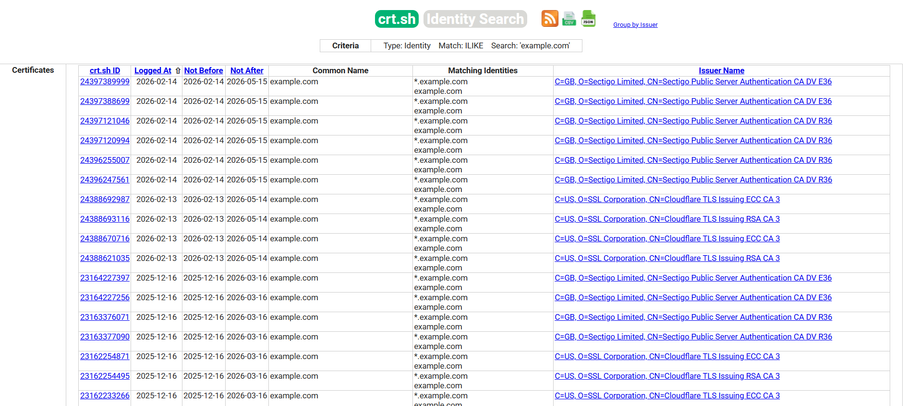

Определение поверхности атаки¶
| ID |
|---|
| WSTG-INFO-04 |
Резюме¶
Определение поверхности атаки (attack surface) веб-приложения включает обнаружение всех приложений, доменов, виртуальных хостов (virtual hosts) и внешних доступных сервисов, связанных с целевой инфраструктурой. Этот процесс выходит за рамки простого выявления размещенных приложений и включает перечисление DNS (DNS enumeration), поиск поддоменов, анализ виртуальных хостов, нестандартных портов, а также проверку цифровых сертификатов и журналов прозрачности сертификатов (Certificate Transparency logs, CT logs).
С распространением виртуального хостинга и разделяемой инфраструктуры традиционное соотношение 1:1 между IP-адресом и веб-сервером практически исчезло. На одном IP-адресе может размещаться несколько приложений в различных доменах, средах развертывания или административных интерфейсах. Неспособность выявить эти активы может привести к неполноте оценки безопасности и пропуску критических уязвимостей.
Специалистам по безопасности иногда предоставляется набор IP-адресов в качестве цели для тестирования. Можно утверждать, что такой сценарий ближе к классическому тестированию на проникновение (penetration testing), однако в любом случае ожидается, что в ходе такой задачи будут протестированы все веб-приложения, доступные через указанную цель. Проблема заключается в том, что заданный IP-адрес обслуживает HTTP-сервис на порту 80, но если тестировщик обратится к нему по IP-адресу (поскольку это все, что ему известно), сервер вернет сообщение вида «No web server configured at this address» или аналогичное. При этом система может «скрывать» множество веб-приложений, привязанных к несвязанным символьным (DNS) именам. Очевидно, что полнота анализа критически зависит от того, проверит ли тестировщик все приложения или ограничится только теми, о которых ему известно изначально.
Иногда спецификация целей бывает более подробной. Тестировщику может быть предоставлен список IP-адресов и соответствующих им символьных имен. Тем не менее этот список может содержать неполную информацию, то есть опускать некоторые символьные имена, о существовании которых может не знать даже сам заказчик (что особенно характерно для крупных организаций).
Еще одна проблема, влияющая на область оценки (scope), связана с веб-приложениями, опубликованными по неочевидным URL-адресам (например, https://www.example.com/some-strange-URL), на которые нигде нет прямых ссылок. Это может происходить либо по ошибке (из-за некорректной конфигурации), либо намеренно (например, неафишируемые административные интерфейсы).
Для решения этих проблем необходимо проводить комплексную процедуру идентификации поверхности атаки.
Цели тестирования¶
- Перечислить все веб-приложения, входящие в область оценки (scope).
- Идентифицировать DNS-имена, домены и виртуальные хосты, связанные с целью.
- Обнаружить дополнительные домены и поддомены с помощью методов пассивного и активного DNS-разведывания.
- Проанализировать цифровые сертификаты и журналы прозрачности сертификатов (Certificate Transparency) для выявления дополнительных имен хостов.
Методика тестирования¶
Обнаружение веб-приложений — это процесс, направленный на идентификацию веб-приложений на заданной инфраструктуре. Последняя обычно задается как набор IP-адресов (возможно, диапазон сети / net block), но может состоять из набора символьных имен DNS или комбинации того и другого. Эта информация предоставляется до начала проведения оценки, будь то классический пентест или специализированный аудит безопасности веб-приложения. В обоих случаях, если правила взаимодействия (rules of engagement) не предписывают иное (например, тестировать только приложение, расположенное по адресу https://www.example.com/), оценка должна стремиться к максимальной полноте охвата, то есть выявлять все приложения, доступные через предоставленную цель. В следующих примерах рассматриваются некоторые методы, которые могут применяться для достижения этой цели.
Некоторые из приведенных ниже методов относятся к общедоступным веб-серверам в сети Интернет, в частности DNS, веб-сервисы обратного поиска по IP и использование поисковых систем. В примерах используются частные IP-адреса (такие как
192.168.1.100), которые, если не указано иное, представляют собой обобщенные IP-адреса и используются исключительно в целях анонимизации.
Существует три фактора, влияющих на то, сколько приложений связано с данным именем DNS (или IP-адресом):
-
Различный базовый URL (Different Base URL)
Очевидной точкой входа для веб-приложения является
www.example.com, то есть под этим сокращенным обозначением мы подразумеваем веб-приложение, начинающееся сhttps://www.example.com/(то же самое справедливо для HTTPS). Однако, хотя это наиболее распространенная ситуация, ничто не обязывает приложение начинаться с корневого пути/.Например, одно и то же символьное имя может быть связано с тремя веб-приложениями:
https://www.example.com/app1,https://www.example.com/app2,https://www.example.com/app3.В этом случае URL
https://www.example.com/может не содержать информативной страницы. Все три приложения останутся скрытыми, пока тестировщик явно не узнает, как к ним обратиться, то есть пока ему не станут известны пути app1, app2 или app3. Обычно нет необходимости публиковать веб-приложения подобным образом, за исключением случаев, когда владелец не хочет, чтобы они были доступны стандартным путем, и готов сообщать пользователям их точное расположение. Это не означает, что эти приложения являются секретными, просто их существование и расположение явно не афишируются. -
Нестандартные порты (Non-standard Ports)
Хотя веб-приложения обычно функционируют на порту 80 (HTTP) и 443 (HTTPS), в этих номерах портов нет ничего строго фиксированного или обязательного. Веб-приложения могут быть привязаны к произвольным TCP-портам и доступны при указании номера порта следующим образом:
http[s]://www.example.com:port/. Например,https://www.example.com:20000/. -
Виртуальные хосты (Virtual Hosts)
Служба DNS позволяет связывать один IP-адрес с одним или несколькими символьными именами. Например, IP-адрес
192.168.1.100может быть сопоставлен с DNS-именамиwww.example.com,helpdesk.example.com,webmail.example.com. При этом не требуется, чтобы все имена принадлежали одному и тому же домену DNS. Это отношение «1-ко-многим» может использоваться для выдачи различного контента с помощью так называемых виртуальных хостов. Информация, определяющая, к какому виртуальному хосту обращается клиент, передается в заголовке HTTP 1.1 Host header.Можно даже не подозревать о существовании других веб-приложений, кроме очевидного
www.example.com, не зная заранее о наличииhelpdesk.example.comиwebmail.example.com.
Подходы к решению проблемы 1 — нестандартные URL¶
Не существует способа достоверно и на 100% подтвердить существование веб-приложений с нестандартными именами. Поскольку они нестандартны, нет единых критериев их именования, однако тестировщик может использовать ряд методов для получения дополнительной информации.
Во-первых, если веб-сервер настроен некорректно и допускает просмотр каталогов (directory browsing / directory listing), обнаружить такие приложения вполне возможно. Сканеры уязвимостей (vulnerability scanners) могут помочь в этом отношении.
Во-вторых, на эти приложения могут вести ссылки с других веб-страниц, и существует вероятность, что они были обойдены поисковыми роботами и проиндексированы поисковыми системами. Если тестировщики подозревают наличие таких скрытых приложений на www.example.com, они могут выполнить поиск с использованием оператора site, проанализировав результаты запроса site: www.example.com. Среди возвращенных URL-адресов может оказаться ссылка на такое неочевидное приложение.
Еще один вариант — проверка URL-адресов, которые являются вероятными кандидатами на роль неопубликованных приложений. Например, веб-интерфейс почты может быть доступен по таким адресам, как https://www.example.com/webmail, https://webmail.example.com/ или https://mail.example.com/. То же относится и к административным интерфейсам, которые могут быть развернуты по скрытым путям (например, панель управления Tomcat) и при этом нигде не упоминаться. Таким образом, перебор по словарю (или «интеллектуальное угадывание») может принести результаты. Сканеры уязвимостей также могут оказаться полезными в этом направлении.
Подходы к решению проблемы 2 — нестандартные порты¶
Проверить наличие веб-приложений на нестандартных портах достаточно просто. Сканер портов, такой как Nmap, способен выполнять распознавание служб с помощью опции -sV и выявлять сервисы http[s] на произвольных портах. Все, что требуется — выполнить полное сканирование всего адресного пространства из 64k TCP-портов.
Например, следующая команда с помощью TCP connect сканирования проверит все открытые порты на IP-адресе 192.168.1.100 и попытается определить, какие службы с ними связаны (показаны только основные параметры — Nmap обладает широким набором опций, рассмотрение которых выходит за рамки данного раздела):
nmap -Pn -sT -sV -p0-65535 192.168.1.100
Достаточно изучить вывод команды и найти записи HTTP или признаки сервисов, обернутых в TLS (которые затем следует дополнительно проверить, чтобы подтвердить, что это именно HTTPS). Например, вывод предыдущей команды может выглядеть следующим образом:
Interesting ports on 192.168.1.100:
(The 65527 ports scanned but not shown below are in state: closed)
PORT STATE SERVICE VERSION
22/tcp open ssh OpenSSH 3.5p1 (protocol 1.99)
80/tcp open http Apache httpd 2.0.40 ((Red Hat Linux))
443/tcp open ssl OpenSSL
901/tcp open http Samba SWAT administration server
1241/tcp open ssl Nessus security scanner
3690/tcp open unknown
8000/tcp open http-alt?
8080/tcp open http Apache Tomcat/Coyote JSP engine 1.1
Из этого примера видно, что:
- На порту 80 работает HTTP-сервер Apache.
- На порту 443 предположительно работает сервер HTTPS (но это требует подтверждения, например, путем открытия
https://192.168.1.100в браузере). - На порту 901 находится веб-интерфейс Samba SWAT.
- Сервис на порту 1241 представляет собой не HTTPS, а обернутый в TLS демон сканера Nessus.
- На порту 3690 работает неопределенная служба (Nmap возвращает ее сигнатуру (fingerprint), опущенную здесь для краткости, вместе с инструкциями по ее отправке для включения в базу данных отпечатков Nmap, если вам известно, какой сервис она представляет).
- Еще один неопределенный сервис обнаружен на порту 8000; возможно, это HTTP, так как веб-серверы нередко размещаются на этом порту. Давайте исследуем этот сервис:
$ ncat 192.168.10.100 8000
GET / HTTP/1.0
HTTP/1.0 200 OK
pragma: no-cache
Content-Type: text/html
Server: MX4J-HTTPD/1.0
expires: now
Cache-Control: no-cache
<html>
...
Это подтверждает, что сервис действительно является HTTP-сервером. В качестве альтернативы тестировщики могли бы открыть этот URL в веб-браузере или воспользоваться perl-командами GET или HEAD, которые имитируют HTTP-взаимодействие, подобное приведенному выше (однако запросы HEAD могут поддерживаться не всеми серверами).
- Apache Tomcat запущен на порту 8080.
Та же задача может быть решена сканерами уязвимостей, однако предварительно следует убедиться, что выбранный сканер способен распознавать службы HTTP[S], работающие на нестандартных портах. Например, Nessus способен определять их на произвольных портах (при условии, что ему задано сканирование всех портов) и, по сравнению с Nmap, предоставит ряд проверок на известные уязвимости веб-серверов, а также на конфигурацию TLS/SSL для сервисов HTTPS. Как отмечалось ранее, Nessus также умеет выявлять популярные приложения или веб-интерфейсы, которые иначе могли бы остаться незамеченными (например, административный интерфейс Tomcat).
Полное сканирование 65535 портов с помощью Nmap с распознаванием служб может выполняться медленно на большом количестве хостов. naabu — это быстрый сканер портов, который можно использовать для оперативного обнаружения открытых портов в большом списке хостов с последующей передачей результатов напрямую в Nmap для распознавания сервисов только на найденных открытых портах:
naabu -p - -rate 2000 -c 50 -retries 2 -warm-up-time 1 -silent -host 192.168.1.100 -nmap-cli 'nmap -sV -oX scan.xml'
Такая связка сначала сканирует все порты с помощью naabu, а затем запускает более медленное сканирование Nmap по распознаванию служб исключительно для тех портов, которые naabu нашел открытыми, что существенно сокращает общее время сканирования.
Подходы к решению проблемы 3 — виртуальные хосты¶
Существует ряд методов, позволяющих определить DNS-имена, связанные с заданным IP-адресом x.y.z.t.
Перечисление записей DNS¶
Перечисление DNS (DNS enumeration) направлено на выявление доменов, поддоменов и связанных с ними DNS-записей целевой организации для расширения области оценки. Перечисление DNS играет ключевую роль в выявлении дополнительных виртуальных хостов, привязанных к одному и тому же IP-адресу. Это может раскрыть системы разработки (development), тестовые окружения (staging), устаревшие сервисы или интерфейсы администрирования.
Для этого могут применяться как пассивные, так и активные методы.
Пассивное перечисление DNS¶
Пассивные методы не взаимодействуют напрямую с целевой инфраструктурой, а опираются на общедоступные источники данных. Примеры включают:
- Общедоступные DNS-записи (A, AAAA, MX, TXT, NS)
- Обратные DNS-запросы (PTR-записи)
- Поисковые системы
- Базы данных Passive DNS
- Журналы Certificate Transparency
Пассивные методы предпочтительны на ранних этапах разведки во избежание обнаружения системами мониторинга цели.
Сервис Chaos и его клиент chaos-client предоставляют доступ к курируемому набору данных поддоменов, предварительно собранных ProjectDiscovery преимущественно из открытых программ Bug Bounty. Это может послужить полезным и быстрым дополнением к пассивному перечислению DNS для доменов, уже включенных в базу данных, однако требует API-ключа, охватывает только домены из своего набора данных и не должно рассматриваться как замена активным инструментам, таким как subfinder или amass, при работе с произвольными целевыми объектами.
Активное перечисление DNS¶
Активные методы напрямую отправляют запросы к DNS-инфраструктуре цели и могут приводить к фиксации событий в логах целевых систем. К ним относятся:
- Брутфорс поддоменов (Subdomain brute forcing)
- Попытки передачи зоны DNS (DNS zone transfer)
- Перечисление DNS-записей с использованием специализированных утилит
К распространенным инструментам перечисления DNS относятся:
amasssubfinderdnsreconfiercedignslookup
Пример использования dig:
; <<>> DiG 9.10.6 <<>> example.com ANY
;; QUESTION SECTION:
;example.com. IN ANY
;; ANSWER SECTION:
example.com. 86400 IN A 93.184.216.34
example.com. 86400 IN MX 10 mail.example.com.
example.com. 86400 IN NS ns1.secure.net.
example.com. 86400 IN NS ns2.secure.net.
example.com. 86400 IN TXT "v=spf1 -all"
Пример использования subfinder:
Перебор комбинаций поддоменов (Subdomain Permutation)¶
После сбора начального набора поддоменов методы перестановок (или модификации / alterations) позволяют генерировать дополнительных кандидатов путем объединения известных меток с распространенными префиксами/суффиксами или применения мутаций (например, dev- → staging-, добавление цифр и т. д.). Для этой цели обычно используются такие инструменты, как altdns, dnsgen или gotator. Сгенерированные кандидаты затем должны быть разрешены в IP-адреса (dnsx / MassDNS) и проверены на доступность сервисов (httpx).
MassDNS — это высокоскоростной DNS-резолвер, полезный для быстрого разрешения больших списков кандидатов, сформированных утилитами перестановок или методом словарного брутфорса.
Передача зоны DNS (Zone Transfer)¶
В настоящее время данный метод имеет ограниченное применение, поскольку DNS-серверы повсеместно запрещают несанкционированную передачу зон (zone transfers). Тем не менее попытку выполнить стоит. Прежде всего, тестировщики должны определить серверы имен (name servers), обслуживающие адрес x.y.z.t. Если для x.y.z.t известно символьное имя (пусть это будет www.example.com), обслуживающие его серверы имен можно определить с помощью таких инструментов, как nslookup, host или dig, запросив записи DNS NS.
Если для x.y.z.t символьные имена неизвестны, но описание цели содержит хотя бы одно символьное имя, тестировщики могут попытаться применить тот же процесс и опросить сервер имен для этого домена (в надежде, что x.y.z.t также обслуживается этим же сервером имен). Например, если цель состоит из IP-адреса x.y.z.t и имени mail.example.com, определите серверы имен для домена example.com.
Следующий пример демонстрирует, как определить серверы имен для www.owasp.org с помощью команды host:
$ host -t ns www.owasp.org
www.owasp.org is an alias for owasp.org.
owasp.org name server ns1.secure.net.
owasp.org name server ns2.secure.net.
Теперь можно запросить передачу зоны у серверов имен домена example.com. Если тестировщику повезет, в ответе вернется список всех записей DNS для этого домена. Он будет включать как очевидный www.example.com, так и не столь очевидные helpdesk.example.com и webmail.example.com (а также, возможно, другие). Проверьте все имена, возвращенные в результате передачи зоны, и отберите те, которые относятся к оцениваемому целевому объекту.
Попытка запросить передачу зоны для owasp.org у одного из его серверов имен:
$ host -l www.owasp.org ns1.secure.net
Using domain server:
Name: ns1.secure.net
Address: 192.220.124.10#53
Aliases:
Host www.owasp.org not found: 5(REFUSED)
; Transfer failed.
Обратные DNS-запросы¶
Этот процесс аналогичен предыдущему, но опирается на обратные записи DNS (PTR). Вместо запроса передачи зоны попробуйте установить тип записи PTR и отправить запрос для заданного IP-адреса. Если тестировщикам повезет, в ответ придет запись с DNS-именем. Этот метод зависит от наличия сопоставлений IP-адресов с символьными именами, что не гарантируется.
DNS-поиск через веб-сервисы¶
Подобный поиск похож на передачу зон DNS, но опирается на веб-сервисы, позволяющие выполнять поиск по именам в DNS. Одним из таких сервисов является Netcraft Search DNS. Тестировщик может запросить список имен, принадлежащих выбранному домену, например example.com. Затем проверяется, имеют ли полученные имена отношение к исследуемой цели.
Сервисы обратного поиска по IP (Reverse-IP)¶
Сервисы Reverse-IP аналогичны обратным DNS-запросам, с той разницей, что тестировщики обращаются к веб-приложению вместо сервера имен. Доступно множество подобных сервисов. Поскольку они склонны возвращать неполные (и зачастую различающиеся) результаты, рекомендуется использовать несколько сервисов для более полного анализа:
Поисковые системы интернет-активов, такие как Shodan, Censys и FOFA, индексируют подключенные к Интернету хосты и службы; поиск по ним можно осуществлять по IP-адресу, сертификату или содержимому баннеров для выявления других имен хостов и служб, размещенных на том же адресе. FOFA, в частности, обладает обширным покрытием инфраструктуры в Китае и Азиатско-Тихоокеанском регионе, что может дополнить данные Shodan и Censys. Например, поиск по IP в FOFA: ip="192.168.1.100", или поиск по определенному заголовку или заголовку ответа: title="Example App". Как и в случае с другими reverse-IP сервисами, здесь доступен бесплатный тариф с ограниченным количеством запросов, а также платные планы для более полного доступа.
Поиск в Google (Googling)¶
После сбора информации с помощью предыдущих методов тестировщики могут обратиться к поисковым системам для уточнения и расширения своего анализа. Это может предоставить свидетельства существования дополнительных символьных имен, принадлежащих цели, или приложений, доступных по неочевидным URL-адресам.
Например, возвращаясь к предыдущему примеру с www.owasp.org, тестировщик может выполнить поиск в Google и других поисковых системах для сбора информации (и, следовательно, DNS-имен), связанной с недавно обнаруженными доменами webgoat.org, webscarab.com и webscarab.net.
Методы поиска через Google подробно описаны в разделе Conduct Search Engine Reconnaissance for Information Leakage.
Цифровые сертификаты¶
Если сервер принимает соединения по протоколу HTTPS, поля Common Name (CN) и Subject Alternate Name (SAN) в сертификате могут содержать одно или несколько имен хостов. Однако если веб-сервер не имеет доверенного сертификата или используются wildcard-сертификаты (с подстановочными знаками), это может не дать полезной информации.
Значения CN и SAN можно получить путем ручного просмотра сертификата или с помощью утилит, таких как OpenSSL:
openssl s_client -connect 93.184.216.34:443 </dev/null 2>/dev/null | openssl x509 -noout -text | grep -E 'DNS:|Subject:'
Subject: C = US, ST = California, L = Los Angeles, O = Internet Corporation for Assigned Names and Numbers, CN = www.example.org
DNS:www.example.org, DNS:example.com, DNS:example.edu, DNS:example.net, DNS:example.org, DNS:www.example.com, DNS:www.example.edu, DNS:www.example.net
Журналы Certificate Transparency¶
Журналы прозрачности сертификатов (Certificate Transparency, CT) представляют собой общедоступные реестры выпущенных сертификатов TLS. По этим журналам можно выполнять поиск для идентификации имен хостов и поддоменов, связанных с целевой организацией, включая staging-системы, интерфейсы администрирования, устаревшие системы или другие внешне доступные сервисы.
Изучение логов CT может выявить имена хостов, которые невозможно обнаружить исключительно с помощью передачи зон DNS, обратного поиска или запросов к поисковым системам. Тестировщикам следует извлечь обнаруженные имена хостов и проверить их работоспособность путем разрешения в DNS, чтобы определить, активны ли они и входят ли в согласованную область оценки.
При анализе данных журналов CT следует обращать внимание на:
- Имена хостов, указывающие на среды разработки, тестирования или предрелизной подготовки (dev, stage, test).
- Административные интерфейсы и панели управления.
- Выведенные из эксплуатации или устаревшие (legacy) системы, которые все еще могут оставаться доступными.
- Wildcard-сертификаты, которые могут указывать на наличие дополнительных необнаруженных поддоменов.
Информация, полученная из журналов CT, должна быть проверена на принадлежность и актуальность перед проведением дальнейшего тестирования.
Необходимо строго соблюдать границы области тестирования (scope), определенные в соглашении на проведение аудита.
Обнаруженные активы должны быть валидированы и задокументированы перед выполнением дальнейших тестовых активностей.
Один из распространенных подходов к отправке запросов к журналам CT — использование общедоступных поисковых порталов, агрегирующих данные сертификатов. Например, тестировщик может выполнить поиск сертификатов, выпущенных для example.com, и проанализировать перечисленные поддомены.
Например: https://crt.sh/?q=%25.example.com
Примечание: Сервис crt.sh периодически испытывает перебои в работе или высокую задержку ответов. Merklemap и Cert Spotter от SSLMate являются альтернативными поисковыми сервисами Certificate Transparency, которые полезно иметь в качестве резервных вариантов.

Рисунок 4.1.4-1: Пример результатов поиска по логам Certificate Transparency.
В результатах могут быть перечислены такие поддомены, как dev.example.com, staging.example.com, или другие имена хостов, на которые нет прямых ссылок с основного сайта. Обнаруженные имена хостов перед дальнейшим тестированием необходимо верифицировать через разрешение DNS.
Пример современного рабочего процесса от пассивного к активному анализу¶
Типичный легковесный конвейер (pipeline), применяемый в современных аудитах безопасности:
# Passive subdomain discovery
subfinder -d example.com -silent | tee subs.txt
amass enum -passive -d example.com -o amass.txt
# Resolve and probe live hosts
cat subs.txt amass.txt | sort -u | dnsx -silent | httpx -silent -title -tech-detect -status-code -o live.txt
# Historical URLs (feed interesting hosts later)
cat live.txt | unfurl domains | sort -u | gau --subs | tee archive-urls.txt
# Screenshot live hosts for visual triage of a large host list
gowitness scan file -f live.txt
При большом количестве обнаруженных хостов создание скриншотов каждого из них обеспечивает быстрый способ визуального триажа (visual triage) результатов — например, для быстрого обнаружения страниц входа, панелей администрирования, стандартных страниц установки или страниц ошибок без необходимости открывать каждый хост вручную. gowitness — актуальный и активно поддерживаемый инструмент для этой задачи; httpx также поддерживает встроенный флаг -screenshot для аналогичных целей без добавления еще одной утилиты в цепочку.
Всегда соблюдайте границы области тестирования (scope), лимиты частоты запросов (rate limits) и правила проведения аудита. Проверяйте принадлежность вновь обнаруженных активов перед началом углубленного тестирования.
Инструменты¶
- Инструменты поиска DNS, такие как
nslookup,digиhost - Инструменты для перечисления поддоменов и картирования поверхности атаки:
- Amass (проект OWASP — пассивный и активный сбор, вывод в виде графа)
- subfinder
- Chaos / chaos-client (курируемый датасет поддоменов, требуется API-ключ)
- dnsx
- httpx (зондирование «живых» хостов, определение технологий, заголовки)
- gowitness (создание скриншотов для визуального триажа живых хостов)
dnsrecon,fierce
- Инструменты перестановок поддоменов (subdomain permutation): altdns, dnsgen, gotator
- MassDNS (высокоскоростной резолвер для списков слов и результатов перестановки)
- Поисковые системы (Google, Bing и другие основные поисковики)
- Сервисы обратного поиска по IP (Reverse IP lookup)
- Поисковые системы интернет-активов: Shodan, Censys, FOFA
- Поисковые порталы Certificate Transparency: crt.sh, Merklemap, Cert Spotter от SSLMate
- Сборщики архивных и исторических URL: gau, waybackurls, waymore
- Nmap
- naabu (быстрое сканирование портов, возможность передачи результатов в Nmap)
- Nessus Vulnerability Scanner
- Nikto
- Обнаружение контента / виртуальных хостов: ffuf, feroxbuster, gobuster
- Анализ исходного кода для поиска эндпоинтов (аудиты по методологии «белого» или «серого» ящика / white-box, gray-box): OWASP Noir, OWASP Attack Surface Detector